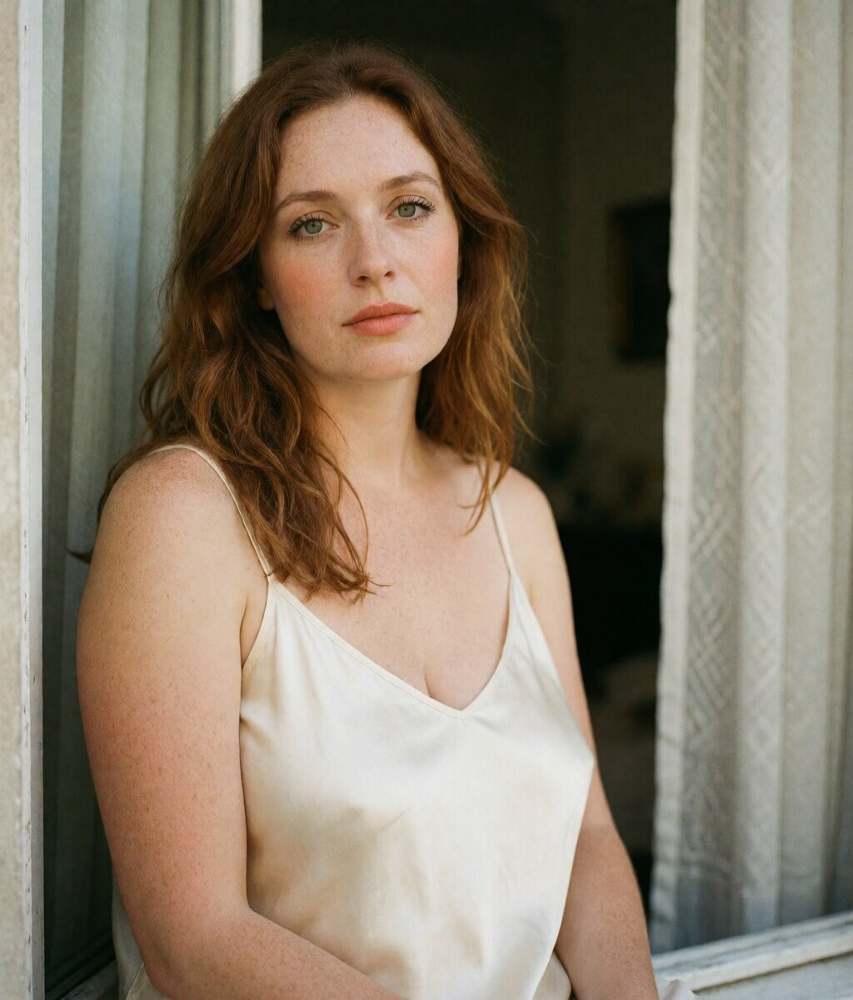
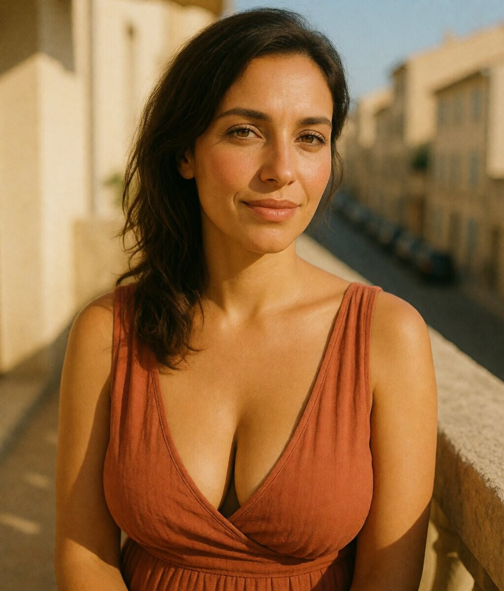
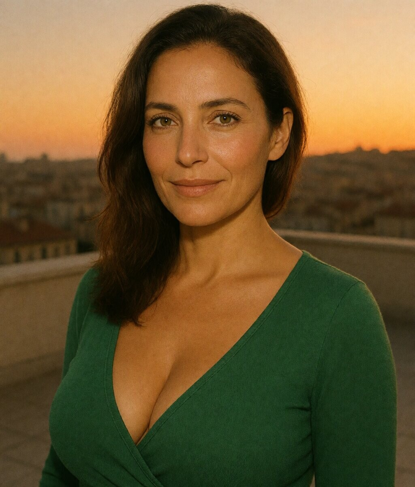
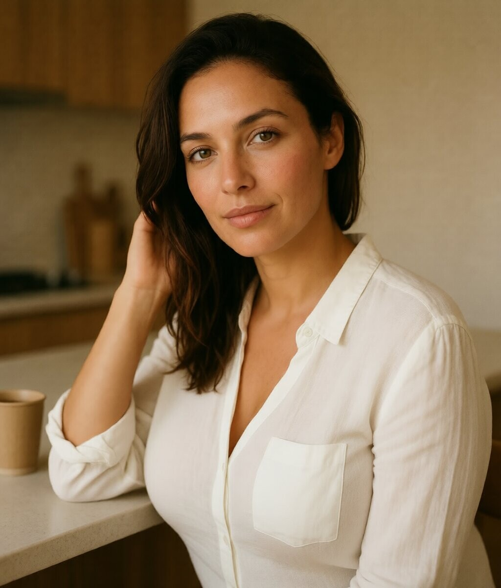
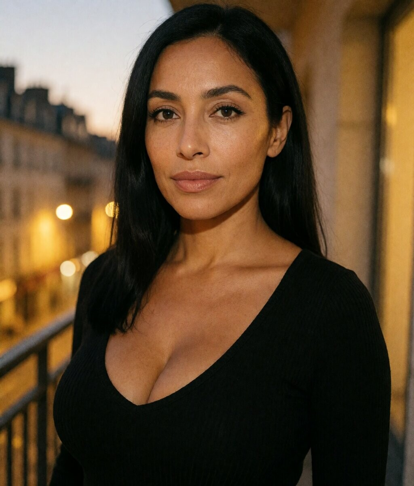
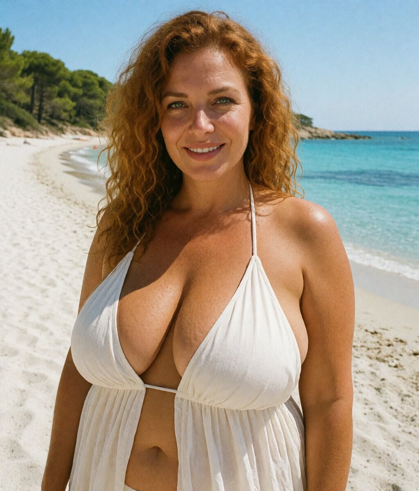
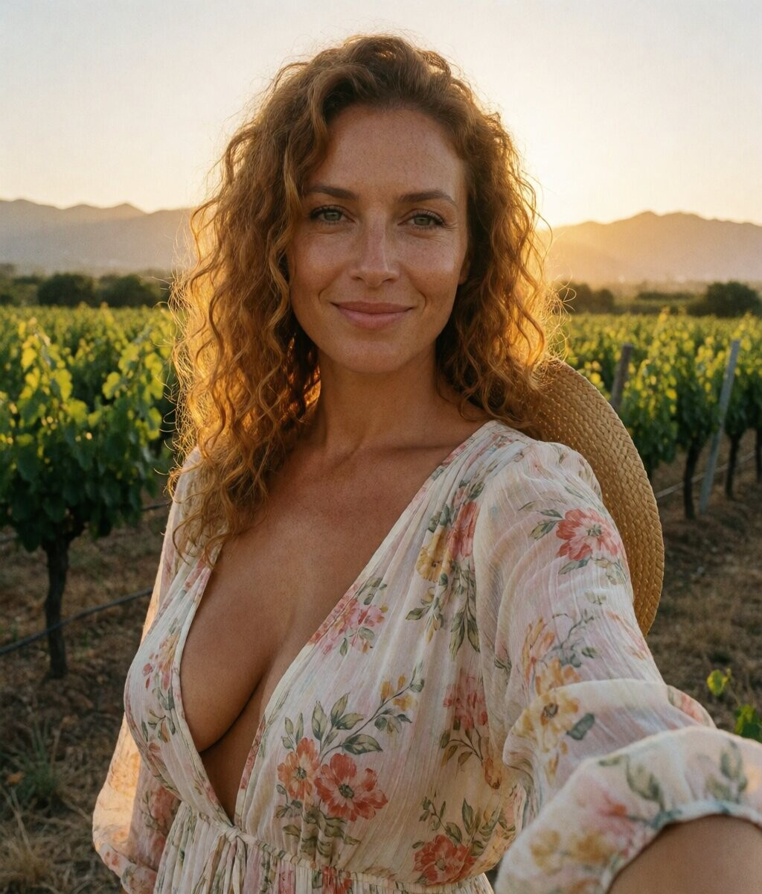
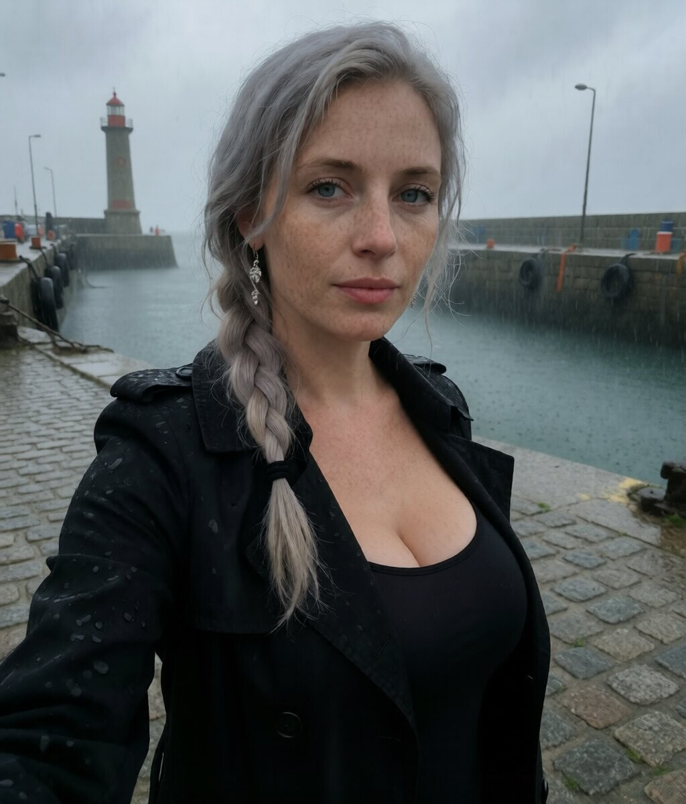
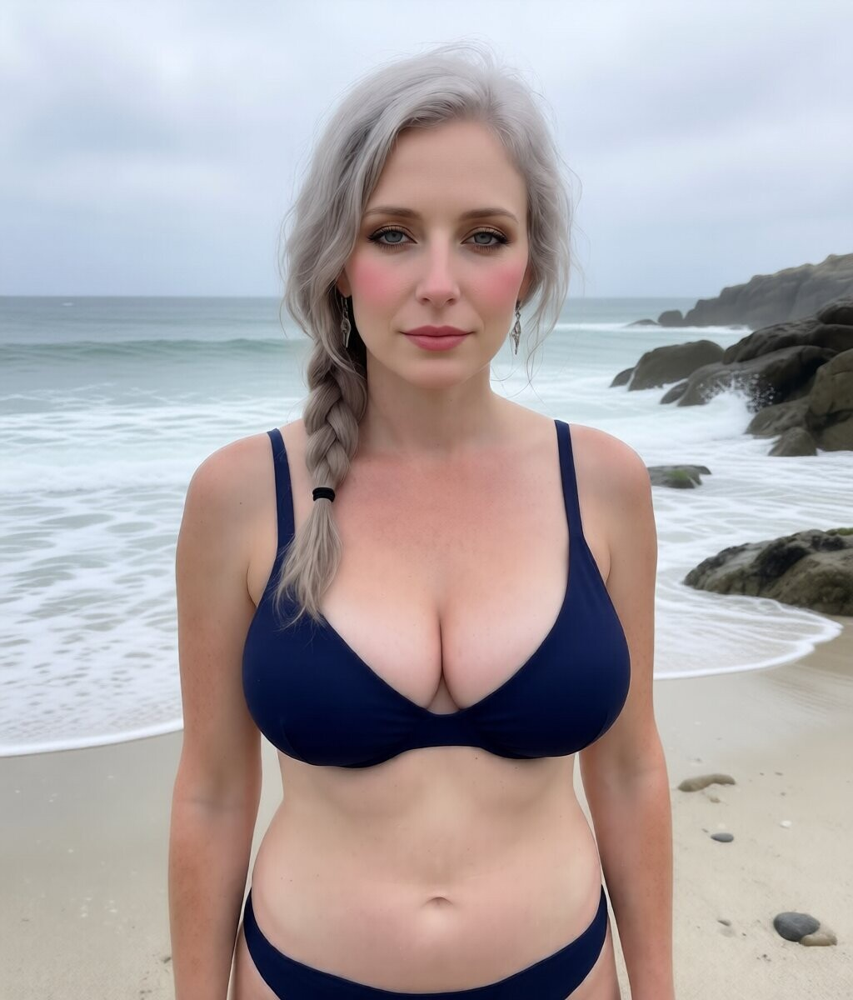
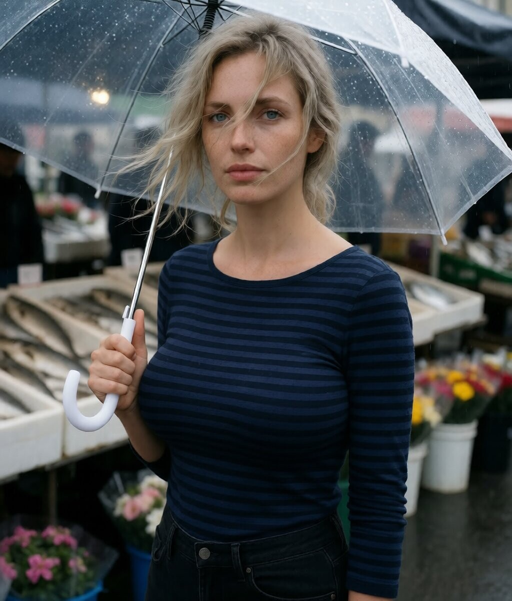

Quatre filles, quatre villes — casting photoréaliste
Rousse auburn, peau porcelaine, taches de rousseur. Yeux verts, sourire doux. Le sud-ouest, la brique, la Garonne.

Franco-maghrebie, peau olive, cheveux bruns, yeux noisette. Marseille, la terrasse, le soleil, la Méditerranée.



Franco-maghrebie, peau caramel, cheveux noirs, yeux bruns amande. Lyon, les pavés, le Rhône, la nuit.

Corse, peau dorée, cheveux auburn bouclés, yeux verts. La falaise, le maquis, la mer Tyrrhénienne, le vignoble.


Bretonne, peau pâle, cheveux gris-blond tressés, yeux bleus. Le port, la bruine, le granit, l'océan.


